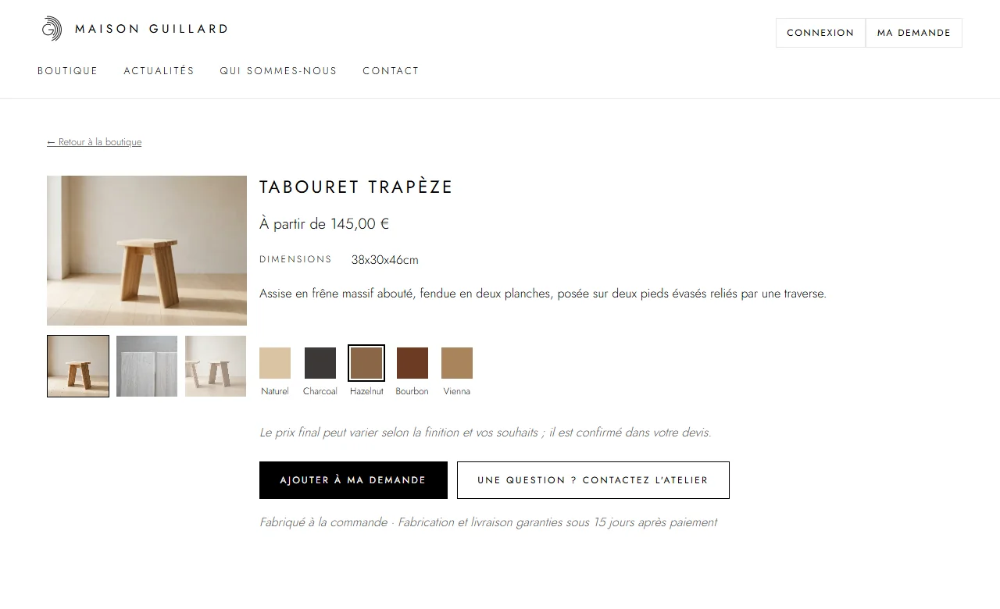

A shop that works entirely to order
Three departments — furniture, ceramics, stationery — and pieces made one at a time, with no stock. The visitor picks a piece and a finish (a small image shows the result) and writes down their wish.
The displayed price is a “from” price: the final price depends on the finish and on the requests, and it is confirmed in the quote.
